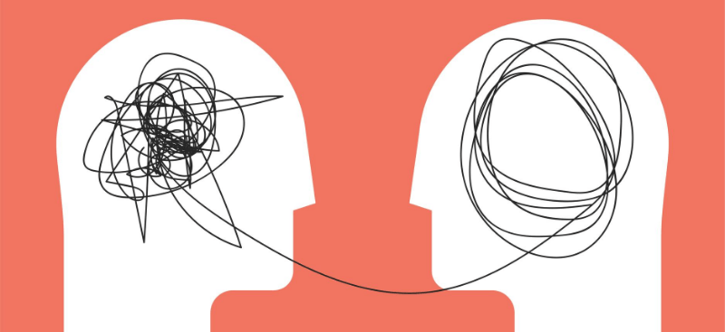

Un paradigma, en un sentido más amplio y general, se refiere a un conjunto de creencias, valores, actitudes y suposiciones que constituyen una forma de ver el mundo y entender la realidad. En este contexto, un paradigma proporciona un marco conceptual o un modelo que guía la forma en que las personas piensan y abordan diversos temas, desde la ciencia y la filosofía hasta la política y la cultura. Los paradigmas influyen en la percepción, el razonamiento y la toma de decisiones de las personas, y tienden a ser compartidos por una comunidad o grupo de individuos que comparten una perspectiva común.
Al estudio de los lenguajes en cuanto al enfoque del proceso de programación se le denomina paradigmas de la programación, entendiéndose el término paradigma como la forma de ver y hacerlos programas. Bajo este enfoque se tienen cuatro paradigmas los cuales son:
El paradigma por procedimientos, es tal vez el más conocido y utilizado en el proceso de programación, donde los programas se desarrollan a través de procedimientos. Pascal C y BASIC son tres de los lenguajes imperativos más importantes. La palabra latina imperare significa "dar instrucciones". El paradigma se inició al principio del año 1950 cuando los diseñadores reconocieron que las variables y los comandos o instrucciones de asignación constituían una simple pero útil abstracción del acceso a memoria y actualización del conjunto de instrucciones máquina. Debido a la estrecha relación con la arquitectura de la máquina, los lenguajes de programación imperativa pueden ser implementados muy eficientemente, al menos en principio.
El paradigma imperativo aún tiene cierto dominio en la actualidad. Una buena parte del software actual ha sido desarrollado y escrito en lenguajes imperativos. La gran mayoría de programadores profesionales son principalmente o exclusivamente programadores imperativos (Hay que añadir que los paradigmas de la programación concurrente y orientada al objeto son en realidad sub-paradigmas de la programación imperativa, así que sus adeptos también son programadores imperativos).
El paradigma declarativo o paradigma de programación lógica se basa en el hecho que un programa implementa una relación antes que una correspondencia. Debido a que las relaciones son mas generales que las correspondencias (identificador - dirección de memoria), la programación lógica es potencialmente de más alto nivel que la programación funcional o la imperativa. El lenguaje más popular enmarcado dentro de este paradigma es el lenguaje PROLOG. El auge del paradigma declarativo se debe a que el área de la lógica formal de las matemáticas ofrece un sencillo algoritmo de resolución de problemas adecuado para, usarse en un sistema de programación declarativo de propósito general.
Si la programación imperativa se caracteriza por el uso de variables, comandos y procedimientos, la programación funcional se caracteriza por el uso de expresiones y funciones. Un programa dentro del paradigma funcional, es una función o un grupo de funciones compuestas por funciones más simples estableciéndose que una función puede llamar a otra, o el resultado de una función puede ser usado como argumento de otra función. El lenguaje por excelencia ubicado dentro de este paradigma es el LISP.
El paradigma orientado a objetos, se basa en los conceptos de objetos y clases de objetos. Un objeto es una variable equipada con un conjunto de operaciones que le pertenecen o están definidas para ellos. El paradigma orientado a objetos actualmente es el paradigma más popular y día a día los programadores, estudiantes y profesionales tratan de tomar algún curso que tenga que ver con este paradigma, podría decirse, que programar orientado a objetos está de moda.